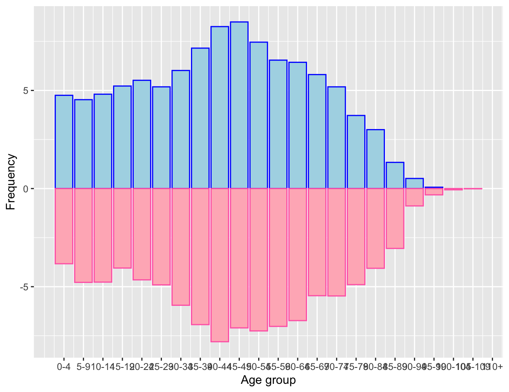
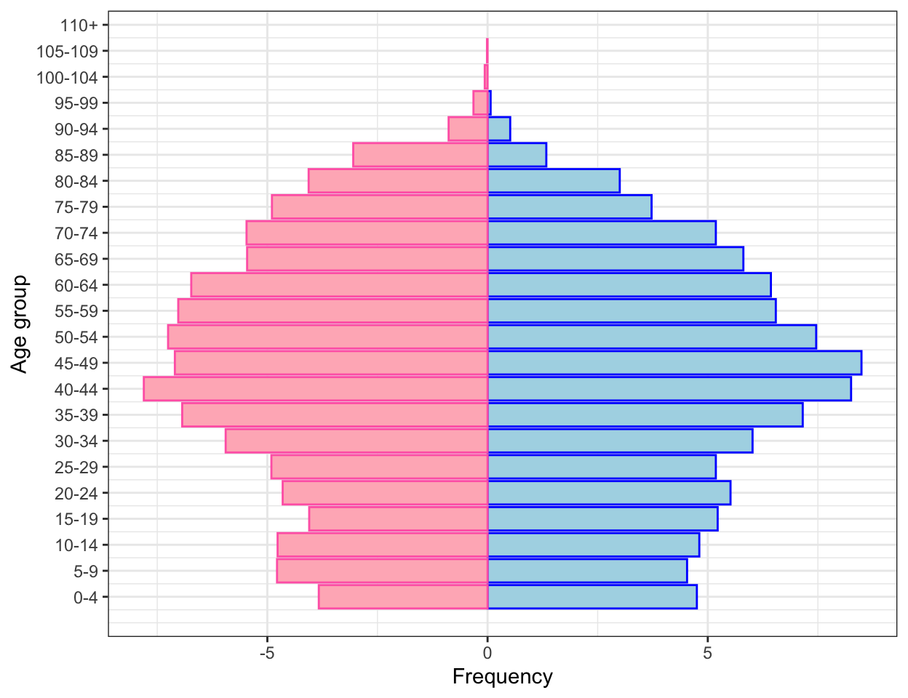
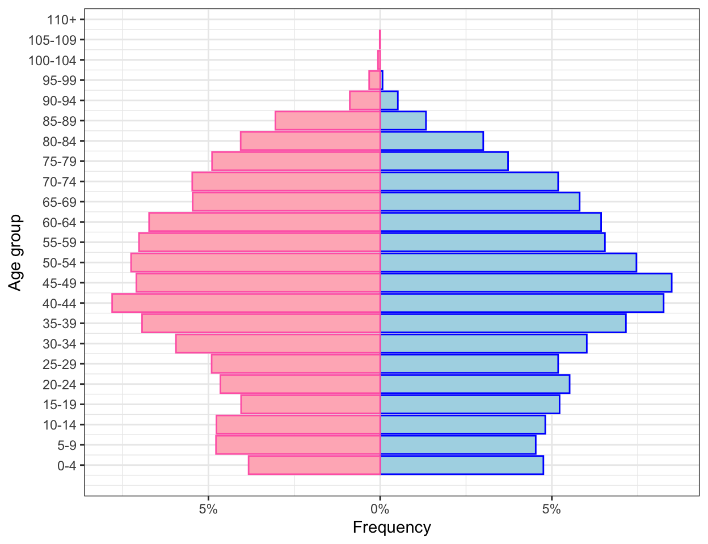

In this article, I will guide you through the construction of the age pyramid which is a common plot in demography.
A common representation in demography is the so-called age pyramid. This is basically a bar graph where each bar represents the frequency of an age class (usually of 5 years) and bars are horizontal. This is done separately for females and males so that the bars start from the center and go to the right for females and to the left for males.
It is easy to picture that in a society where there are lots of children and few elderly, like it used to be in the early twentieth century, this representation would look like a pyramid with bars that get smaller and smaller as we go up on the pyramid. Nowadays the situation is fairly different and the age pyramid, though preserving its name, looks like a trepezoid, with lots of people in mid age and only few newborns.
I am pretty sure there are R packages that do such representation. However every time I have to do it, I get crazy trying to find the right one for my data or trying to reshape my data to fit the format other users’ functions work with.
Hence, finding inspiration online here and there, I have created my favourite routine.
Suppose the initial dataset is a file of microdata. Here I simulated a dataset with 15000 observations and two variables: age and gender of each inidividual.
I create my age pyramid in two steps: first I calculate the frequency distribution of the age class for men and women separately and save it in a table, and then I represent the table with a plot. In the next few lines I will describe the code that produces a nice and neat age pyramid.
As usual, the required packages and data are loaded:
require(tidyverse)
my_microdata <- read_csv("data/sim_microdata") Then I need some data preparation/manipulation. First I divide the variable containing the age into groups of five years:
my_microdata$age_group <- cut(my_microdata$age, c(seq(-1, 109, 5), Inf), labels = FALSE)Second I manually create a vactor containing the labels of such groups:
age_group_labels <- c("0-4", "5-9", "10-14", "15-19", "20-24", "25-29", "30-34", "35-39",
"40-44", "45-49", "50-54", "55-59", "60-64", "65-69", "70-74",
"75-79", "80-84", "85-89", "90-94", "95-99", "100-104", "105-109", "110+")Last, as the dataset contains some variables I do not need anymore, such as ungrouped age, I select the only two variables I will need to build the age pyramid, i.e. gender and age class:
my_microdata <- my_microdata %>% select(sex, age_group)Now that the data has been manipulated, I can start with the actual steps for creating the age pyramid.
First I calculate the frequency distribution of the age class for men and women separately. Hence, using the dplyr package I group by age class and sex and I count how many individuals is there for each gender in each age class:
tab_age_pyramid <- my_microdata %>%
group_by(sex, age_group) %>%
summarise(freq = n()) %>%
mutate(freq = freq/sum(freq)*100) %>%
ungroup()
knitr::kable(head(tab_age_pyramid), "html") %>%
kableExtra::kable_styling(full_width = F, font_size = 11, position = "center")| sex | age_group | freq |
|---|---|---|
| 1 | 1 | 4.751980 |
| 1 | 2 | 4.529665 |
| 1 | 3 | 4.807559 |
| 1 | 4 | 5.224399 |
| 1 | 5 | 5.516187 |
| 1 | 6 | 5.182715 |
Now it is time to plot the data. I will use the ggplot2 package, more specifically I use the geom_bar function. I create one bar plot for each gender and I color males in lightblue and females in lightpink so that I do not need a legend for gender:
p1 <- ggplot() +
geom_bar(data = tab_age_pyramid %>% filter(sex == 1),
aes(age_group, freq), stat = "identity", fill = "lightblue", col = "blue") +
geom_bar(data = tab_age_pyramid %>% filter(sex == 2),
aes(age_group, -freq), stat = "identity", fill = "lightpink", col = "hotpink") Then I add labels for each age class using the scale_x_continuous() function and the vector of labels created in the data preparation phase:
p2 <- p1 +
scale_x_continuous(breaks = 1:23, labels = age_group_labels) In order to make the plot easier to read, I add x and y labels:
p3 <- p2 +
labs(y = "Frequency", x = "Age group")
p3
The above plot does not look like a pyramid yet, hence I flip coordinates using the coord_flip() function. Also, I do not like the default ggplot theme as I believe the gray background looks a bit too rich, hence I will also change the theme:
p4 <- p3 + coord_flip() + theme_bw()
p4
One last small change I need to make is to get rid of the negative numbers on the left hand side of the “Frequency axis”. Moreover I would like to add the percentage symbol, so that it is clear we are talking about relative frequencies. I will do it by replacing the y (which is now on the x) axis with new labels. I will use the function scale_y_continous:
p_final <- p4 +
scale_y_continuous(labels=function(freq) paste0(abs(freq), "%"))
p_final
So here is a nice and neat age pyramid :)
The next step will be to pack the routine into a function so that every time I need to do an age pyramid, that happens quite often working with demographers!, I can do it with a single line code. But this will be the topic of a different article ;)